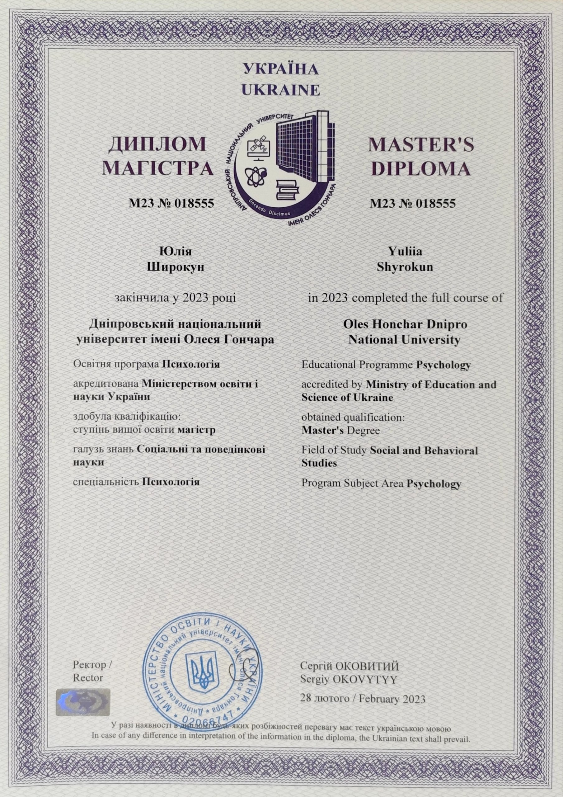
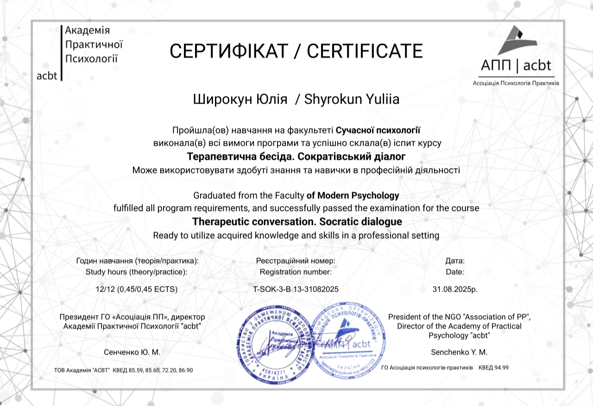
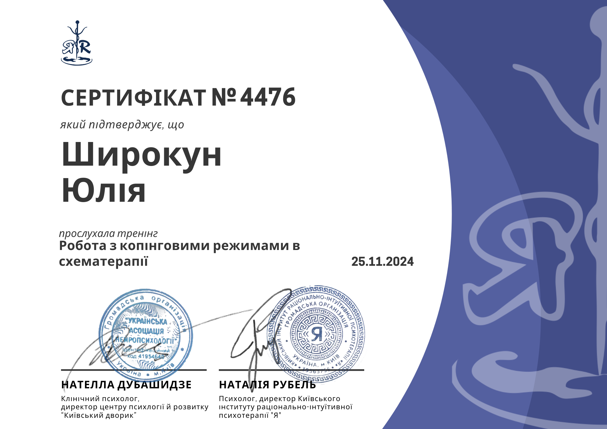
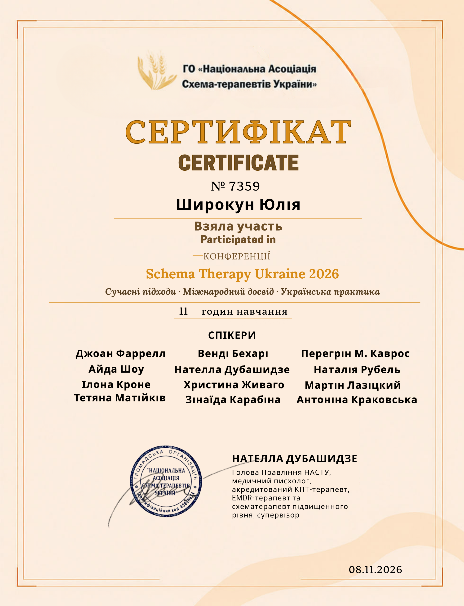

CLINICAL PSYCHOLOGIST
Yuliia
Shyrokun
When the familiar becomes unbearable, we gently nurture something new
Psychotherapy using Schema Therapy and Trauma-Focused Cognitive Behavioural Therapy.
Online consultations
BOOK A CONSULTATION
GETTING TO KNOW ME
About me
Hello! I’m Yuliia Shyrokun, a clinical psychologist.
My path into psychology was a conscious decision I made later in life. To me, being a psychologist means, first and foremost, listening attentively to each person’s experience, offering acceptance without judgement, and creating space for change.
In response to the challenges of wartime, in 2023 I specialised in clinical psychology and completed training in the fundamentals of psychotraumatology and Trauma-Focused Cognitive Behavioural Therapy. That same year, I began working with active-duty military personnel at a psychiatric hospital. This experience deepened my understanding of traumatic experiences and taught me how to support people through some of the most difficult periods of their lives.
Later, I became particularly interested in Schema Therapy — an approach that helps us understand how past experiences shape the way we relate to ourselves, our relationships with others, and our habitual responses. I value the opportunity not only to work with current concerns, but also to explore the deeper roots of difficulties and gradually change longstanding patterns that may prevent us from living life to the fullest.
Today, I work at a charitable foundation and continue to develop my private practice.
 1
1
 2
2

3 5
5
 6
6
 7
7

8 9
9

10 11
11
 12
12

13GET IN TOUCH
Contact
If you would like to discuss working together, feel free to contact me in whichever way is most convenient for you.
I work online. To discuss the format, time, and details of our first meeting, please contact me via Telegram or Instagram.